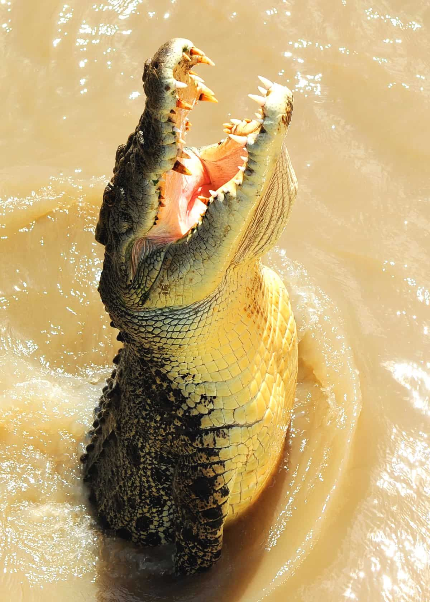

Coccodrillo
Generalità
Il coccodrillo è una delle specie di animali più conosiuta al mondo.
E' un carnivoro, diffuso soprattutto nelle zone equatoriali e vive lungo fiumi e laghi.
Solitamente pesa tra i 20 e i 1000 kg

Curiosità
- Ha il morso più potente tra tutti gli animali.
- Il coccodrilloha una schiena abbastanza forte da respingere i proiettili.
- Gli occhi del coccodrillo riflettono la luce.